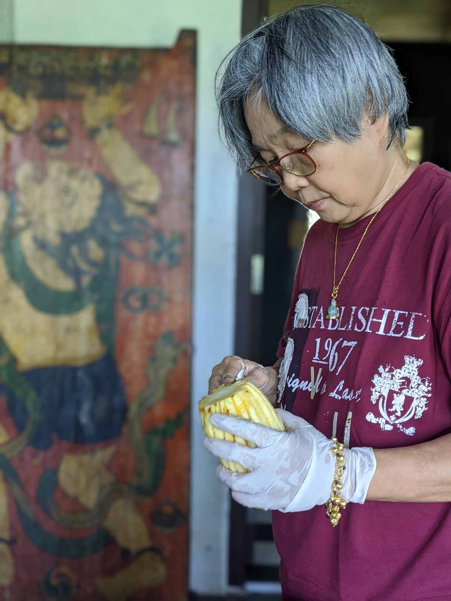
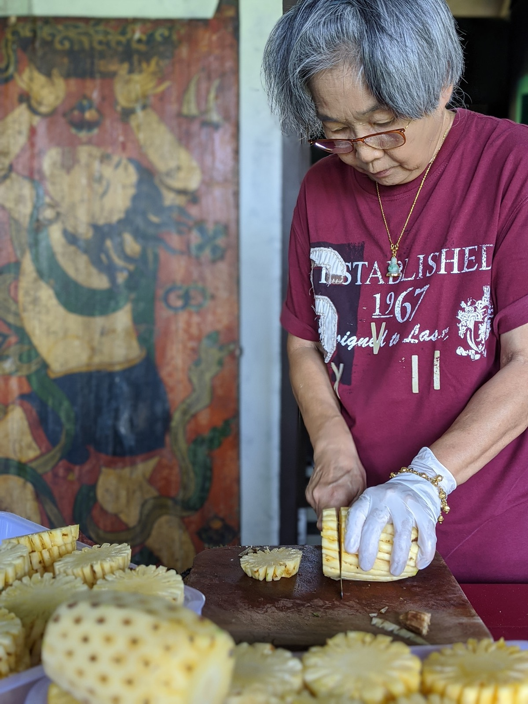

2020 · press · event
How Baan Ar-Jor prepares its salted cobia fish dish


Original text in Thai
กว่าจะได้ #ปลาสำลีญี่ปุ่นต้มเค็ม ที่สะอาด น้ำต้มเค็มรสชาติกลมกล่อม อร่อย ทานง่าย ทั้งเนื้อและกระดูกนิ่มละมุน โดยใช้ #ยานัดบ้านเรา พร้อมเติมรสจัดจ้านได้ ด้วยน้ำจิ้มซีฟู้ดสูตรพิเศษ
ทุกขั้นตอนมีรายละเอียด
#การเตรียม เริ่มตั้งแต่คัดเลือกวัตถุดิบสมุนไพรที่ใช้ทำเครื่อง พร้อมล้างสะอาดทั้ง ขิง รากผักชี ถั่วเม็ดโต พริกแดง พริกไทย
คัดเลือกปลาตัวโต ให้ขนาดเท่าๆกัน ควักไส้ ล้างอย่างพิถีพิถัน ทุกๆตัว สัปปะรดภูเก็ตแท้ เลือกซื้อจากสวนชุมชนชาวบ้าน ปอกเปลือก หั่นตา และฝานให้เท่ากันแทบทุกๆชิ้น โดย #อามะ 🥰
#การปรุง มีเคล็ดลับการต้มเค็มด้วยสูตรโบราณ โดย #ครูกบ เชฟอาหารชาววังโบราณ ควบคุมความร้อน ต้มยาวนานกว่า 10 ชม จนได้ปลาที่เนื้อนุ่ม ก้างนิ่ม น้ำรสชาติกลมกล่อมพอดี 😋
#การแพ็ค เลือกใช้ถุงขนาดใหญ่ เพื่อใส่ทั้งเหลี่ยว เครื่องเคียง และน้ำต้มเค็มให้ทุกคนได้ทานอิ่มจุใจ มัดด้วยยางวงและสะบัด 9 รอบ ให้ถุงป่อง แล้วบรรจุลงถุงกระดาษเตรียมโดย #คุณบีวิบวิบ 😊 พร้อมปิดสัญลักษณ์ #บ้านอาจ้อ อย่างพิถีพิถัน ทั้งหมด กำกับและด่าทางไกลโดย #จี้ 😆
#การจัดส่ง หลังจากเตรียมทุกอย่างสดใหม่ คนส่งใส่หน้ากาก ล้างมือทุกครั้งที่นำส่งให้ลูกค้า เพื่อมั่นใจในความสะอาด และพยายามให้ถึงมือลูกค้าทุกคน ก่อนเที่ยง เพื่อจะได้แกะห่อ และนำมาทานพร้อมหน้าพร้อมตากันในครอบครัว 😇
#งานขายก็มา 😆 อยากให้ได้ลองทานคับ ราคา 300 ต่อชุด ค่าส่ง 50 บาท
📞 โทร [เบอร์โทร] หรือทักมาได้คับ
พรุ่งนี้ส่งได้รอบสุดท้ายก่อนเที่ยง ก่อนปิดยาวถึงสิ้นเดือนเมษายนนี้
#เก็บรักษา เก็บช่องเย็นได้ 7 วัน ช่องฟรีซได้ 1 เดือน
#ขอบคุณลูกค้าที่น่ารักทุกคนคับ 🙂
#ล้างมือก่อนทานอาหารทุกครั้ง
#HomeSweetHome
#บ้านอาจ้อ
#ของหร๊อยประเทศภูเก็ต